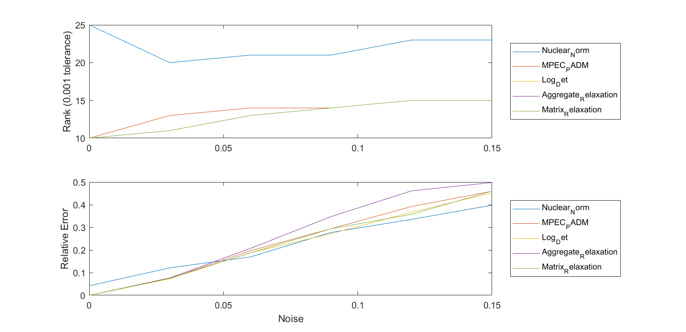
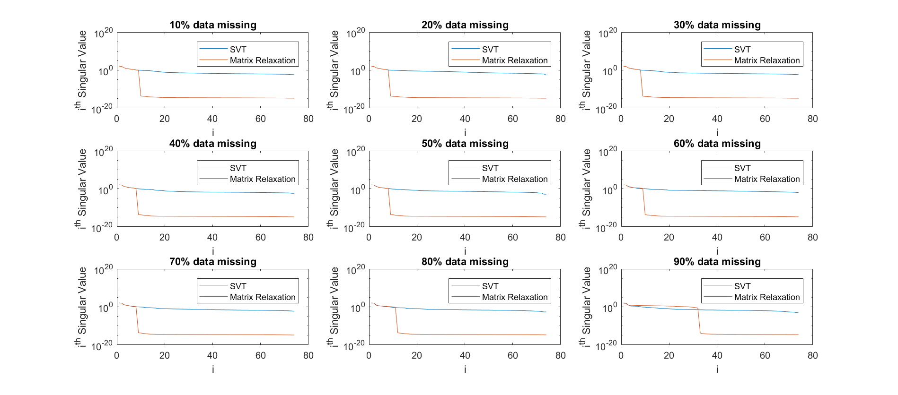
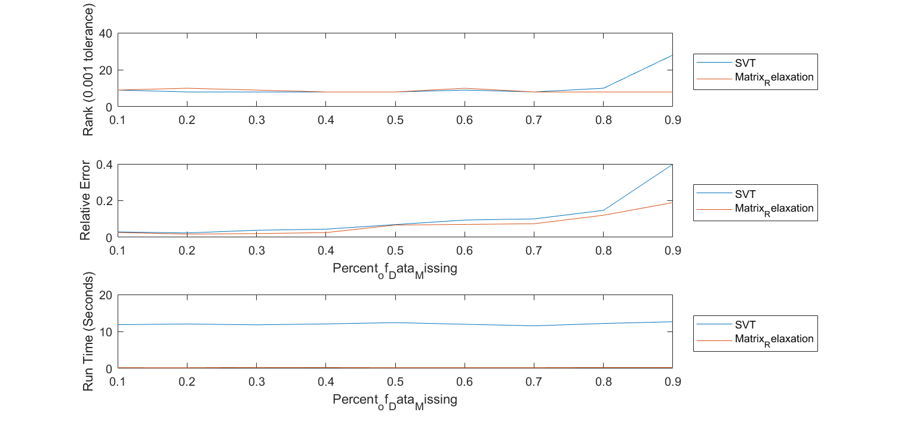

Contents
Testing SeDuMi for Aggregated Relaxation Algorithm
Lets set up a test case real quick to test this on.
clear; n=100; r=30; [points, distances, A, b]=generateSensorProblem(n,r,.5, 0); U=eye(n); eps=1; c=10; mu=1; tic; cvx_begin cvx_solver sedumi variable X(n,n) minimize mu*pos(sum(sum(X.*U))-eps)+(c/2)* square_pos(sum(sum(X.*U))-eps) subject to A*vec(X)==b; X == semidefinite(n) cvx_end cvx_time=toc; tic; cvx_begin cvx_solver sdpt3 variable Xsdpt3cvx(n,n) minimize mu*pos(sum(sum(Xsdpt3cvx.*U))-eps)+(c/2)* square_pos(sum(sum(Xsdpt3cvx.*U))-eps) subject to A*vec(Xsdpt3cvx)==b; Xsdpt3cvx == semidefinite(n) cvx_end sdpt3cvx_time=toc;
Calling SeDuMi 1.34: 5056 variables, 2528 equality constraints For improved efficiency, SeDuMi is solving the dual problem. ------------------------------------------------------------ SeDuMi 1.34 (beta) by AdvOL, 2005-2008 and Jos F. Sturm, 1998-2003. Alg = 2: xz-corrector, Adaptive Step-Differentiation, theta = 0.250, beta = 0.500 eqs m = 2528, order n = 106, dim = 10007, blocks = 3 nnz(A) = 7781 + 0, nnz(ADA) = 6376230, nnz(L) = 3189379 it : b*y gap delta rate t/tP* t/tD* feas cg cg prec 0 : 1.00E+00 0.000 1 : -2.03E+02 1.86E-01 0.000 0.1850 0.9000 0.9000 -0.97 1 1 6.0E+00 2 : -9.50E+02 6.64E-02 0.000 0.3576 0.9000 0.9000 -0.89 1 1 5.5E+00 3 : -3.21E+03 2.94E-02 0.000 0.4427 0.9000 0.9000 -0.77 1 1 4.9E+00 4 : -8.77E+03 1.48E-02 0.000 0.5033 0.9000 0.9000 -0.57 1 1 4.0E+00 5 : -1.62E+04 7.35E-03 0.000 0.4967 0.9000 0.9000 -0.50 1 1 3.6E+00 6 : -3.61E+04 4.34E-03 0.000 0.5903 0.9000 0.9000 0.00 1 1 2.5E+00 7 : -5.09E+04 1.95E-03 0.000 0.4503 0.9000 0.9000 -0.30 1 1 2.2E+00 8 : -1.02E+05 8.81E-04 0.000 0.4510 0.9000 0.9000 0.25 1 1 1.2E+00 9 : -1.40E+05 3.69E-04 0.000 0.4182 0.9000 0.9000 0.07 1 1 8.2E-01 10 : -1.99E+05 1.44E-04 0.000 0.3905 0.9000 0.9000 0.56 1 1 3.7E-01 11 : -2.32E+05 6.68E-05 0.000 0.4643 0.9000 0.9000 0.58 1 1 2.1E-01 12 : -2.66E+05 2.16E-05 0.000 0.3229 0.9000 0.9000 1.03 1 1 6.5E-02 13 : -2.66E+05 8.25E-08 0.000 0.0038 0.9000 0.0000 1.02 1 1 4.0E-02 14 : -2.76E+05 1.61E-08 0.000 0.1950 0.9112 0.9000 1.06 1 1 7.9E-03 15 : -2.79E+05 2.89E-09 0.000 0.1797 0.9037 0.9000 0.98 1 1 1.4E-03 16 : -2.80E+05 4.41E-10 0.000 0.1527 0.9000 0.9057 0.99 1 1 2.2E-04 17 : -2.80E+05 6.68E-11 0.000 0.1513 0.9000 0.9193 1.00 1 1 4.0E-05 18 : -2.80E+05 2.15E-11 0.000 0.3220 0.9000 0.7282 1.00 1 1 1.3E-05 19 : -2.80E+05 6.23E-12 0.000 0.2899 0.9000 0.9000 1.00 2 1 3.8E-06 20 : -2.80E+05 1.84E-12 0.000 0.2958 0.9000 0.9000 1.00 1 2 1.1E-06 21 : -2.80E+05 5.71E-13 0.000 0.3096 0.9000 0.9000 1.00 2 2 3.5E-07 22 : -2.80E+05 1.77E-13 0.000 0.3104 0.9000 0.9000 1.00 2 2 1.1E-07 23 : -2.80E+05 5.32E-14 0.000 0.3002 0.9000 0.9000 1.00 2 2 3.3E-08 24 : -2.80E+05 1.52E-14 0.000 0.2859 0.9000 0.9000 1.00 2 2 9.3E-09 iter seconds digits c*x b*y 24 54.1 Inf -2.8013628762e+05 -2.8013628757e+05 |Ax-b| = 1.5e-08, [Ay-c]_+ = 2.5E-07, |x|= 2.0e+05, |y|= 5.6e+04 Detailed timing (sec) Pre IPM Post 4.300E-01 5.305E+01 2.200E-02 Max-norms: ||b||=5, ||c|| = 8.558445e+00, Cholesky |add|=0, |skip| = 0, ||L.L|| = 473.2. ------------------------------------------------------------ Status: Solved Optimal value (cvx_optval): +280136 Calling SDPT3 4.0: 5056 variables, 2528 equality constraints For improved efficiency, SDPT3 is solving the dual problem. ------------------------------------------------------------ num. of constraints = 2528 dim. of sdp var = 102, num. of sdp blk = 2 dim. of linear var = 3 ******************************************************************* SDPT3: Infeasible path-following algorithms ******************************************************************* version predcorr gam expon scale_data HKM 1 0.000 1 0 it pstep dstep pinfeas dinfeas gap prim-obj dual-obj cputime ------------------------------------------------------------------- 0|0.000|0.000|9.7e+02|1.0e+01|1.1e+07| 2.039230e+01 0.000000e+00| 0:0:00| spchol 1 1 1|0.006|0.007|9.6e+02|1.0e+01|1.1e+07|-6.891941e+03 -4.787428e+02| 0:0:00| chol 1 1 2|0.022|0.063|9.4e+02|9.4e+00|1.0e+07|-2.154596e+04 -2.407997e+03| 0:0:01| chol 1 1 3|0.060|0.030|8.8e+02|9.1e+00|1.0e+07| 2.492994e+04 -4.328336e+03| 0:0:01| chol 1 1 4|0.369|0.241|5.6e+02|6.9e+00|1.0e+07| 5.060591e+04 -1.443786e+04| 0:0:02| chol 1 1 5|0.304|0.466|3.9e+02|3.7e+00|6.5e+06| 1.813881e+04 -7.001162e+04| 0:0:02| chol 1 1 6|0.582|0.489|1.6e+02|1.9e+00|4.7e+06| 5.703242e+04 -1.336745e+05| 0:0:02| chol 1 1 7|0.463|0.559|8.7e+01|8.3e-01|2.9e+06| 7.618162e+04 -2.099842e+05| 0:0:03| chol 1 1 8|0.441|0.672|4.9e+01|2.7e-01|1.4e+06| 7.839460e+04 -2.720136e+05| 0:0:03| chol 1 1 9|0.544|0.853|2.2e+01|4.0e-02|5.5e+05| 2.738345e+04 -3.097966e+05| 0:0:04| chol 1 1 10|0.910|0.868|2.0e+00|5.4e-03|1.1e+05|-2.133616e+05 -2.972457e+05| 0:0:04| chol 1 1 11|0.901|0.997|2.0e-01|4.2e-05|2.0e+04|-2.681786e+05 -2.881393e+05| 0:0:05| chol 1 1 12|1.000|0.988|2.7e-11|1.4e-05|9.6e+03|-2.733421e+05 -2.828469e+05| 0:0:05| chol 1 1 13|0.901|0.995|1.4e-11|7.0e-06|1.2e+03|-2.793750e+05 -2.805715e+05| 0:0:05| chol 1 1 14|1.000|1.000|6.9e-11|3.5e-06|4.0e+02|-2.799437e+05 -2.803255e+05| 0:0:06| chol 1 1 15|0.953|0.955|9.6e-11|1.8e-06|2.0e+01|-2.801275e+05 -2.801370e+05| 0:0:06| chol 1 1 16|0.948|0.958|4.3e-10|7.7e-08|1.0e+00|-2.801358e+05 -2.801364e+05| 0:0:07| chol 1 1 17|0.945|0.961|4.5e-10|3.0e-09|5.3e-02|-2.801363e+05 -2.801363e+05| 0:0:07| chol 1 1 18|0.911|0.966|6.3e-08|1.2e-10|4.2e-03|-2.801363e+05 -2.801363e+05| 0:0:07| chol 1 2 19|0.949|0.997|8.3e-09|7.9e-12|4.9e-04|-2.801363e+05 -2.801363e+05| 0:0:08| stop: max(relative gap, infeasibilities) < 1.49e-08 ------------------------------------------------------------------- number of iterations = 19 primal objective value = -2.80136290e+05 dual objective value = -2.80136291e+05 gap := trace(XZ) = 4.94e-04 relative gap = 8.82e-10 actual relative gap = 7.98e-10 rel. primal infeas (scaled problem) = 8.28e-09 rel. dual " " " = 7.91e-12 rel. primal infeas (unscaled problem) = 0.00e+00 rel. dual " " " = 0.00e+00 norm(X), norm(y), norm(Z) = 2.8e+05, 5.6e+04, 5.6e+04 norm(A), norm(b), norm(C) = 8.9e+01, 6.1e+00, 1.8e+02 Total CPU time (secs) = 7.90 CPU time per iteration = 0.42 termination code = 0 DIMACS: 8.4e-09 0.0e+00 2.7e-10 0.0e+00 8.0e-10 8.8e-10 ------------------------------------------------------------------- ------------------------------------------------------------ Status: Solved Optimal value (cvx_optval): +280136
Now we solve this with sedumi
numCon=length(b); Asedumi=zeros(numCon+3, n^2+5); Asedumi(1:numCon,6:n^2+5)=A; Asedumi(numCon+1,6:n^2+5)=vec(U)'; Asedumi(numCon+1:numCon+3, 1:5)=[-1, 1, 0, 0, 0;1, 0, 0 ,0 -1;0,0,0,1,0]; csedumi=zeros(5+n^2, 1); csedumi(1)=mu; csedumi(3)=c/2; bsedumi=[b;eps;0;0.5]; K.l=2; K.r=3; K.s=n; tic; [x,y,info] = sedumi(Asedumi',bsedumi,csedumi,K); sedumi_time=toc; Xsedumi=mat(x(6:n^2+5));
SeDuMi 1.3 by AdvOL, 2005-2008 and Jos F. Sturm, 1998-2003. Alg = 2: xz-corrector, Adaptive Step-Differentiation, theta = 0.250, beta = 0.500 eqs m = 2528, order n = 105, dim = 10006, blocks = 3 nnz(A) = 7681 + 0, nnz(ADA) = 6380682, nnz(L) = 3191605 it : b*y gap delta rate t/tP* t/tD* feas cg cg prec 0 : 2.01E+01 0.000 1 : 2.46E+02 6.12E+00 0.000 0.3046 0.9000 0.9000 -0.90 1 1 1.9E+02 2 : 1.00E+03 2.51E+00 0.000 0.4099 0.9000 0.9000 -0.78 1 1 1.6E+02 3 : 2.87E+03 1.18E+00 0.000 0.4693 0.9000 0.9000 -0.60 1 1 1.4E+02 4 : 5.50E+03 5.77E-01 0.000 0.4894 0.9000 0.9000 -0.50 1 1 1.2E+02 5 : 1.17E+04 3.26E-01 0.000 0.5661 0.9000 0.9000 -0.11 1 1 8.7E+01 6 : 1.69E+04 1.42E-01 0.000 0.4364 0.9000 0.9000 -0.39 1 1 8.4E+01 7 : 3.44E+04 6.48E-02 0.000 0.4547 0.9000 0.9000 0.04 1 1 4.9E+01 8 : 5.09E+04 2.55E-02 0.000 0.3930 0.9000 0.9000 -0.14 1 1 3.9E+01 9 : 8.00E+04 1.07E-02 0.000 0.4209 0.9000 0.9000 0.19 1 1 2.3E+01 10 : 1.05E+05 4.68E-03 0.000 0.4367 0.9000 0.9000 0.06 1 1 1.8E+01 11 : 1.44E+05 2.04E-03 0.000 0.4365 0.9000 0.9000 0.40 1 1 1.0E+01 12 : 1.71E+05 9.86E-04 0.000 0.4826 0.9000 0.9000 0.26 1 1 7.6E+00 13 : 2.13E+05 4.25E-04 0.000 0.4311 0.9000 0.9000 0.65 1 1 3.8E+00 14 : 2.36E+05 2.18E-04 0.000 0.5134 0.9000 0.9000 0.56 1 1 2.5E+00 15 : 2.63E+05 7.82E-05 0.000 0.3584 0.9000 0.9000 0.91 1 1 9.3E-01 16 : 2.73E+05 3.26E-05 0.000 0.4168 0.9000 0.9000 0.87 1 1 4.3E-01 17 : 2.79E+05 6.74E-06 0.000 0.2068 0.9000 0.9000 0.98 1 1 9.0E-02 18 : 2.80E+05 5.49E-07 0.000 0.0814 0.9000 0.8749 0.98 1 1 1.7E-02 19 : 2.80E+05 3.03E-08 0.000 0.0552 0.9900 0.9900 0.99 1 1 9.2E-04 20 : 2.80E+05 1.78E-09 0.000 0.0586 0.9900 0.9900 1.00 1 1 5.4E-05 21 : 2.80E+05 9.51E-11 0.191 0.0536 0.9900 0.9900 1.00 1 2 2.9E-06 22 : 2.80E+05 2.07E-11 0.000 0.2172 0.9000 0.9000 1.00 2 2 6.3E-07 23 : 2.80E+05 6.00E-12 0.000 0.2904 0.9000 0.9000 1.00 2 2 1.8E-07 24 : 2.80E+05 1.76E-12 0.000 0.2933 0.9000 0.9000 1.00 2 2 5.4E-08 25 : 2.80E+05 3.34E-13 0.000 0.1901 0.9000 0.9000 1.00 4 4 1.0E-08 26 : 2.80E+05 2.66E-14 0.144 0.0795 0.9900 0.9900 1.00 4 4 8.1E-10 iter seconds digits c*x b*y 26 59.8 11.7 2.8013629048e+05 2.8013629048e+05 |Ax-b| = 4.8e-09, [Ay-c]_+ = 0.0E+00, |x|= 5.6e+04, |y|= 5.6e+05 Detailed timing (sec) Pre IPM Post 1.144E+01 6.873E+01 5.060E-01 Max-norms: ||b||=8.558445e+00, ||c|| = 3.535534e+00, Cholesky |add|=0, |skip| = 0, ||L.L|| = 473.202.
Well, it worked, lets look at the results then.
fprintf("Sedumi Time: %f \t Objective: %f \n", sedumi_time, mu*pos(sum(sum(Xsedumi.*U))-eps)+(c/2)* pos(sum(sum(Xsedumi.*U))-eps)^2); fprintf("CVX with Sedumi Time: %f \t Objective: %f \n", cvx_time, mu*pos(sum(sum(X.*U))-eps)+(c/2)* pos(sum(sum(X.*U))-eps)^2); fprintf("CVX with SDPT3 Time: %f \t Objective: %f \n", sdpt3cvx_time, mu*pos(sum(sum(Xsdpt3cvx.*U))-eps)+(c/2)* pos(sum(sum(Xsdpt3cvx.*U))-eps)^2);
Sedumi Time: 81.005675 Objective: 280136.290524 CVX with Sedumi Time: 54.725173 Objective: 280136.290685 CVX with SDPT3 Time: 8.793795 Objective: 280136.290710
Solving it with SDPT3
Okays, so feeding it directly to SeDuMi makes it go a lot faster, thats good to confirm, but it seems that using SDPT3 is faster than SeDuMi
%[blk,At,C,bt,perm] = read_sedumi(Asedumi,bsedumi,csedumi,K); blk{1,1}='s'; blk{1,2}= n; blk{2,1}='s'; blk{2,2}= 2; blk{3,1}='l'; blk{3,2}= 2; bsdpt3=[b;eps;0;1]; for k=1:length(b) AA1{k}=mat(A(k,:)); AA2{k}=[0,0;0,0]; end AA1{length(b)+1}=-U; AA1{length(b)+2}=zeros(n); AA1{length(b)+3}=zeros(n); AA2{length(b)+1}=[0, 0.5;0.5,0]; AA2{length(b)+2}=[0, 0.5;0.5,0]; AA2{length(b)+3}=[1,0;0,0]; At(1) = svec(blk(1,:),AA1); At(2) = svec(blk(2,:),AA2); At{3}= [zeros(length(b),2); -1,0;0,-1;0,0]'; C{1}=zeros(n); C{2}=[0, mu/2;mu/2, c/2]; C{3}=[0,0]; [obj,X,y,Z] = sdpt3(blk,At,C,bsdpt3);
num. of constraints = 2528 dim. of sdp var = 102, num. of sdp blk = 2 dim. of linear var = 2 number of nearly dependent constraints = 1189 To remove these constraints, re-run sqlp.m with OPTIONS.rmdepconstr = 1. ******************************************************************* SDPT3: Infeasible path-following algorithms ******************************************************************* version predcorr gam expon scale_data HKM 1 0.000 1 0 it pstep dstep pinfeas dinfeas gap prim-obj dual-obj cputime ------------------------------------------------------------------- 0|0.000|0.000|2.1e+02|1.8e+01|4.1e+05| 9.558445e+01 0.000000e+00| 0:0:01| spchol 2 1 1|0.023|0.022|2.1e+02|1.8e+01|4.1e+05| 1.967026e+02 9.053367e+05| 0:0:02| chol 3 3 2|0.104|0.081|1.8e+02|1.7e+01|4.0e+05| 1.521504e+03 4.264737e+10| 0:0:02| chol 13 24 3|0.250|0.080|1.4e+02|1.5e+01|3.2e+05| 4.390704e+03 6.044556e+14| 0:0:03| chol linsysolve: Schur complement matrix not positive definite switch to LU factor. lu 11 30 4|0.188|0.200|1.1e+02|1.2e+01|3.1e+05| 1.042969e+04 4.774788e+16| 0:0:05| lu 11 ^ 1 5|0.991|1.000|4.7e+01|7.3e-17|5.3e+04| 1.899402e+03 4.774788e+16| 0:0:06| lu 11 ^ 1 6|0.989|1.000|7.5e-01|0.0e+00|5.8e+02| 2.083562e+01 4.774788e+16| 0:0:07| lu 11 ^ 1 7|0.846|1.000|9.4e-01|0.0e+00|9.5e+01| 3.297528e+00 4.774788e+16| 0:0:08| lu 30 ^ 6 8|0.000|0.000|9.4e-01|7.1e-01|1.1e+02| 4.174427e+00 4.776243e+16| 0:0:09| lu 11 ^ 1 9|0.977|1.000|9.7e-01|0.0e+00|3.2e+01| 2.673127e+00 4.776243e+16| 0:0:10| lu 11 ^30 10|0.000|0.000|9.7e-01|7.0e-01|3.2e+01| 7.874881e+00 5.067367e+16| 0:0:11| lu 11 30 11|1.000|0.939|1.8e+01|4.3e-02|1.3e+04| 1.083517e+05 5.067367e+16| 0:0:13| lu 11 ^13 12|0.961|1.000|2.9e+01|0.0e+00|7.8e+03| 6.654578e+03 5.067367e+16| 0:0:14| lu 11 ^ 8 13|0.874|1.000|4.1e+00|0.0e+00|1.1e+03| 1.272004e+03 5.067367e+16| 0:0:15| lu 11 ^ 2 14|0.988|1.000|9.8e-01|0.0e+00|1.3e+01| 1.516183e+01 5.067367e+16| 0:0:16| lu 11 ^ 2 15|0.989|1.000|1.0e+00|0.0e+00|1.4e-01| 1.667296e-01 5.067367e+16| 0:0:17| lu 11 ^ 4 16|0.989|1.000|1.0e+00|0.0e+00|1.5e-03| 1.832229e-03 5.067367e+16| 0:0:18| lu 20 stop: steps in predictor too short: pstep = 1.86e-09, dstep = 4.66e-09 17|0.000|0.000|1.0e+00|0.0e+00|1.5e-03| 1.832229e-03 5.067367e+16| 0:0:19| prim_inf,dual_inf,relgap = 9.96e-01, 0.00e+00, 3.04e-20 sqlp stop: primal problem is suspected of being infeasible ------------------------------------------------------------------- number of iterations = 17 residual of primal infeasibility certificate (y,Z) = 9.97e-17 reldist to infeas. <= 2.18e-18 Total CPU time (secs) = 18.91 CPU time per iteration = 1.11 termination code = 1 DIMACS errors: 2.6e+01 0.0e+00 0.0e+00 0.0e+00 -1.0e+00 3.0e-20 -------------------------------------------------------------------
Big issue right now: Why does Ax=0 instead of b? This is really weird because im doing the same thing as the example code.
norm(At{1}'*svec(blk(1,:), X{1})+ At{2}'*svec(blk(2,:), X{2})+ At{3}'*svec(blk(3,:), X{3}))
ans =
0.0016
Varying Noise
Doing it correctly this time, last time i enforced equallity instead of saying |Ax-b| <= delta
clear; if exist("Nov14Section1.mat", 'file')~=2 rankTol=0.001; x=randn(10,50); D=x'*x; noise=0:0.03:0.15; for i=1:length(noise) [A,b] = sampleUniformSymmetric(D,0.55,noise(i)); gamma=1.1*norm(A*vec(D)-b); [ Xnuc ] = nuclearNormPSD(zeros(50,50),A,b, gamma, [], [], []); [ Xar ] = aggregatedRelaxationPADM(zeros(50,50),A,b, gamma, [], [], [10, 0.95]); [ Xmpec ] = Rank_MPEC_PADM(zeros(50,50),A, b,sqrt(gamma),zeros(1,2500),[0],1e6); [ Xlogdet ] = logDet(zeros(50,50),A,b, gamma, [], [], [1,1]); [ Xmm, obj ]=matrixRelaxationMM(zeros(50,50),A,b, gamma, [], [], [1,1]); error(i,1)=norm(Xnuc-D, 'fro')/norm(D, 'fro'); error(i,2)=norm(Xmpec-D, 'fro')/norm(D, 'fro'); error(i,3)=norm(Xlogdet-D, 'fro')/norm(D, 'fro'); error(i,4)=norm(Xar-D, 'fro')/norm(D, 'fro'); error(i,5)=norm(Xmm-D, 'fro')/norm(D, 'fro'); rank(i,1)=sum(svd(Xnuc)>rankTol); rank(i,2)=sum(svd(Xmpec)>rankTol); rank(i,3)=sum(svd(Xlogdet)>rankTol); rank(i,4)=sum(svd(Xar)>rankTol); rank(i,5)=sum(svd(Xmm)>rankTol); end save("Nov14Section1.mat") else load("Nov14Section1.mat") end [rankTable, errorTable]=displayResults(noise, rank, error, [],{'Noise', 'Nuclear_Norm', 'MPEC_PADM', 'Log_Det', 'Aggregate_Relaxation', 'Matrix_Relaxation'});
Rank:
Noise Nuclear_Norm MPEC_PADM Log_Det Aggregate_Relaxation Matrix_Relaxation
_____ ____________ _________ _______ ____________________ _________________
0 25 10 10 10 10
0.03 20 13 11 11 11
0.06 21 14 13 13 13
0.09 21 14 14 14 14
0.12 23 15 15 15 15
0.15 23 15 15 15 15
Error:
Noise Nuclear_Norm MPEC_PADM Log_Det Aggregate_Relaxation Matrix_Relaxation
_____ ____________ __________ __________ ____________________ _________________
0 0.042214 6.1146e-05 4.3585e-07 2.1801e-09 6.1361e-08
0.03 0.12129 0.074198 0.073235 0.076706 0.07515
0.06 0.16954 0.19673 0.18812 0.20704 0.18737
0.09 0.27755 0.29391 0.27205 0.34757 0.29375
0.12 0.33521 0.39212 0.36713 0.46132 0.35763
0.15 0.39806 0.45952 0.45234 0.49805 0.46033
runTimeTable =
[]
 PMU tests
if exist("nov14Section2.mat", 'file')~=2 plist=0.1:0.1:0.9; rank=[]; error=[]; load("pmuData.mat") data=precondition(data); dataReal=[real(data), imag(data)]; rankTol=1; figure(); set(gcf, 'Units', 'Normalized', 'OuterPosition', [.1, 0.1, .9, 0.9]) for i=1:length(plist) data=precondition(data); dataReal=[real(data), imag(data)]; [ M,b,row,col ] = sampleUniform(data,plist(i)); rowReal=[row, row]; colReal=[col, col+37]; bReal=[real(b), imag(b)]; MReal=[real(M), imag(M)]; [p,m]=size(data); tic; Xsvt=svt(rowReal, colReal, bReal, 600, 74, 100, .1, 0.0001, 1000); runtime(i,1)=toc; tic; [Xmr, k]=sIRLS(zeros(600, 74),MReal,-2,10000, 0.000001, 1000); runtime(i,2)=toc; error(i,1)=norm(Xsvt-dataReal, 'fro')/norm(dataReal, 'fro'); error(i,2)=norm(Xmr-dataReal, 'fro')/norm(dataReal, 'fro'); rank(i,1)=sum(svd(Xsvt)>rankTol); rank(i,2)=sum(svd(Xmr)>rankTol); subplot(ceil(length(plist)/3), 3, i) semilogy(svd(Xmr)) hold on semilogy(svd(Xsvt)) xlabel("i") ylabel("i^{th} Singular Value") title(plist(i)*100+"% data missing") legend(["SVT", "Matrix Relaxation"]) end save("nov14Section2.mat") else openfig('nov14section2.fig') load("nov14Section2.mat") end [rankTable, errorTable, runTimeTable]=displayResults(plist, rank, error, runtime, {'Percent_of_Data_Missing', 'SVT', 'Matrix_Relaxation'});
ans =
Figure (3) with properties:
Number: 3
Name: ''
Color: [0.9400 0.9400 0.9400]
Position: [0.0292 0.0556 0.9885 0.8435]
Units: 'normalized'
Use GET to show all properties
Rank:
Percent_of_Data_Missing SVT Matrix_Relaxation
_______________________ ___ _________________
0.1 9 9
0.2 8 10
0.3 8 9
0.4 8 8
0.5 8 8
0.6 9 10
0.7 8 8
0.8 10 8
0.9 28 8
Error:
Percent_of_Data_Missing SVT Matrix_Relaxation
_______________________ ________ _________________
0.1 0.029208 0.026189
0.2 0.023667 0.017311
0.3 0.038217 0.020199
0.4 0.044338 0.025504
0.5 0.069229 0.066909
0.6 0.094007 0.070075
0.7 0.10029 0.073904
0.8 0.14682 0.12024
0.9 0.39873 0.18934
Run Time:
Percent_of_Data_Missing SVT Matrix_Relaxation
_______________________ ______ _________________
0.1 11.841 0.19354
0.2 12.021 0.18821
0.3 11.8 0.27768
0.4 12.045 0.24125
0.5 12.397 0.19387
0.6 11.948 0.20508
0.7 11.532 0.20431
0.8 12.162 0.25091
0.9 12.633 0.25047
 